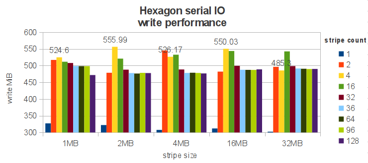
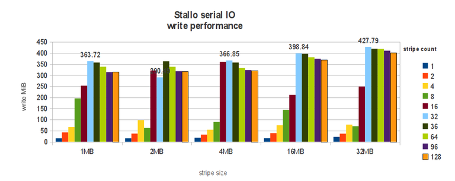
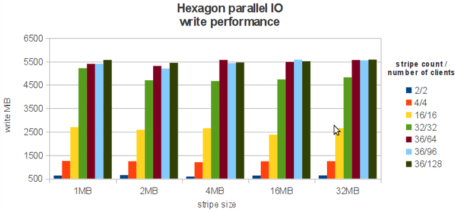

Lustre FS performance tips¶
How you can adjust Lustre depending on your application IO requirements.¶
Introduction¶
Lustre is a scalable, high performance, parallel I/O file system. More information about Lustre can be found on Wikipedia .
When using additional library for I/O (i.e. MPIIO, HDF5), reading and writing can be done in parallel from several nodes into single-shared file.
At the time of writing this guide Lustre is available on 2 NOTUR machines:
Hexagon ( /work )
Stallo (/global/work )
All tests were performed on fully loaded machines, mean values of three repeats were used.
Lustre terminology and setup:
MDS is the MetaData Server which handles the information about files and directories. OSS is a object storage server that store file data on one or more object storage targets (OSTs). OST is the Object Storage Target, which is responsible for writing or reading the actual data to and from disk.
Striping¶
Lustre file striping defines the number of OSTs a file is written across. At the time of writing hexagon has 2 stripes with 1MB size. Stallo has by default 1 stripe (no striping). You can manage striping with the following tools/commands:
lfs setstripe - a command to change striping parameters. lfs getstripe - a command to get striping information. llapi - a set of C commands to manipulate striping parameters from C programs (llapi_file_create, llapi_file_get_stripe).
Note that the changed striping can only take effect for newly created files or files that are copied (not moved) into the directory.
Examples:
lfs setstripe –size 2M “dir” # will set stripe size for “dir” to 2M.
lfs setstripe –count 12 “dir” # will set that each file inside “dir” will be striped across 12 OSTs.
Serial IO¶
This is when a file or set of files are accessed by one process. Below are charts representing Hexagon and Stallo serial IO performance with different number of OSTs and different chunk sizes. It is true for both machines that to get better IO performance you have to stripe file across several OSTs, where for:
 Hexagon optimal is using 2-4 OSTs, depending on the stripe size. Increasing chunk size is not much affecting hexagon. This can be related to the interconnect, where 1MB transfer size is a minimal size to get optimal performance.
Stallo, by using 8 OSTs you will speedup your data IO from default 25MIB/s to almost 200MIB/s! Maximum performance you will get with bigger chunk size and enough number of OSTs (32MB chunk and 32OSTs will give you 428MIB/s).
Parallel IO¶
Many processes writing into single-shared file. You will need to write at offsets or use parallel IO library, like MPIIO, HDF5. On both machines the same number of stripes as the number of clients have been used (up to the maximum number of OSTs).

The general rule, like “many clients – do stripe” works on both machines. Specific: - Hexagon. One to one ratio of clients to OSTs works fine (up to the maximum number of OSTs). Increasing chunk size is not affecting performance. - Stallo, to get most out of the file system you will have to increase the chunk size to 32MB and when you have up to 96 clients stripe over as many OSTs as you have clients, when you are over 96 clients, keep number of OSTs to 96 to avoid contention.
General Tips¶
General striping recommendation:
Many clients and many files: Do NOT stripe.
Many clients one file: Do stripe.
Some clients and few large files: Do stripe.
In addition:
Use parallel IO (HDF5, MPIIO), this is the only way to get full advantage of the Lustre filesystem.
Open files read-only whenever is possible.
Keep small files on the same OST.
It is highly recommended to read I/O Lustre tips from NICS (http://www.nics.tennessee.edu/computing-resources/file-systems/io-lustre-tips).